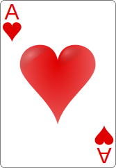
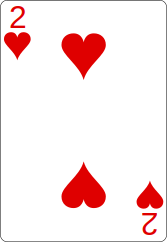
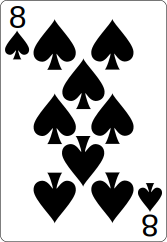

L'énigme de Dostaek
J'ai pris un jeu de carte standard, puis j'ai enlevé les figures, et je l'ai trié comme ceci:


- 
- 


- 


Je trouve ça logique dans cet ordre-là, c'est alphabétique! Clubs, Diamonds, Hearts, Spades. Vous ne trouvez pas?
Puis je l'ai re-trié, avec une règle maison. J'ai ensuite pris une carte que j'ai changé de position au hasard, pour que ça soit plus compliqué. Ça donne ceci:
Hmm, en fait c'est trop compliqué. Je vous donne une chance. Je vais prendre une règle plus simple, mais quand même échanger une carte dans une position au hasard. Ça donne ceci:
Maintenant, ma question est: combien vaut mon talisman?
Indice gratuit
Prenez un vrai jeu de carte physique devant vous, c'est essentiel. Ma première règle utilisait la suite de Fibonacci. Il n'y a pas de jeu de mots ici, ou de lettres à exclure, ou de code secret, ou de lien avec mon nom: que de pures mathématiques.
Cet indice était gratuit, mais le prochain ne le sera pas! Si vous utilisez l'autre indice, vous gagnerez moins de réputation pour cette énigme.
Indice
La carte qui change de place n'est pas choisie au hasard: seule sa nouvelle place l'est. Elle est la même dans mes deux séries. Elle est toujours placée plus vers la fin que son emplacement original. Elle est bougée après que la suite soit construite, c'est-à-dire, elle n'est pas mise à part avant de construire la série, puis placée dans une série construite: avec ma règle, cela décalerait toutes les cartes qui sont derrière elle.
Puisque cette carte est si importante, elle devrait vous renseigner sur mon talisman.